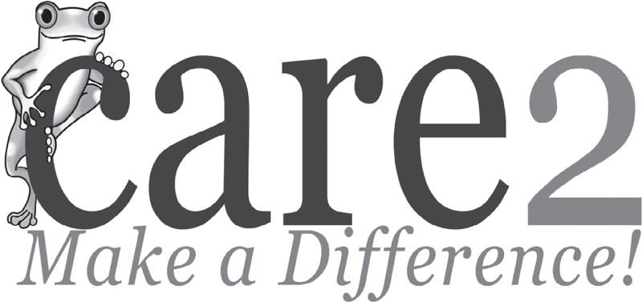
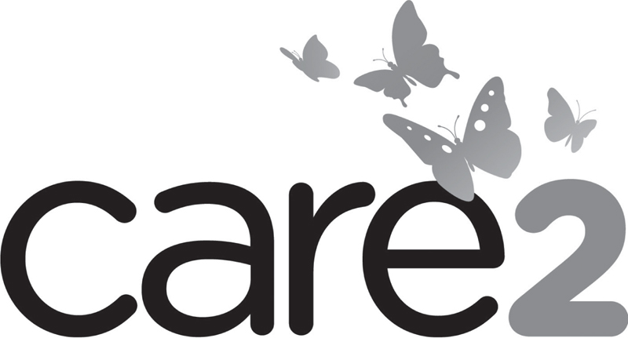

When Randy Paynter was 11 years old, he traveled with his ornithologist dad up the Amazon River. The richness and diversity of wildlife, vegetation and people of the deep jungle made a lasting impression. He was concerned about the destruction of the Amazonian rain forests and wanted to do something to help. With the advent of the Internet, he found a way. He started a website called Care2 that would bring social activists together to make a difference in the world.
Over time, the website became the number-one petition site in the world. However, it added so many community features, e-cards, healthy and green living content and news feeds that it eventually became cluttered and hard to navigate. The company had lost its way in how to define and express its brand. This caused market confusion and hampered Care2’s efforts to grow its membership and its revenue base.
When I was brought in to help the company, it had something no other competitor could boast: Care2 was the world’s largest and most trusted social action network. Care2 needed to claim and establish this leadership position.
Its brand promise was enabling members to
•Feel good about taking social action in a friendly community.
•Make informed choices affecting your health, sustainability and the world.
The original Care2 logo was designed in four colors and incorporated an endangered Amazon tree frog with bulging orange eyes. The green frog overemphasized Care2’s environmental roots and no longer reflected its broader umbrella of causes. The gangly amphibian appealed more to men than to the women, who made up the larger share of the membership.
Figure 7.1
Care2 Original Logo

Energy Energy Design, a visual branding firm headed by Creative Director Leslie Guidice, partnered with me on the Care2 project. Energy Energy redesigned the company logo and the website to underscore the new brand message. In the new four-color design, butterflies rise out of the logotype to symbolize how individual actions can lead to profound change. According to Care2, the “butterfly effect” in physics references “the flap of a butterfly’s wings in the Brazilian rain forest, that moves the air, that redirects the breeze, that alters the wind, and eventually leads to a hurricane moving up the east coast of America.” For years, Care2 had given butterfly symbols to members each time they took social actions. Therefore butterflies, which are women-friendly and evoke community better than a lone frog, became the new symbol for Care2.
Figure 7.2
Care2 Redesigned Logo

Care2’s brand finally made sense, and CEO Randy Paynter felt empowered by the alignment with the company’s history and its current vision. The CEO followed the company’s brand ecosystem model (chapter 5) and went to the Care2 employees before telling the rest of the world about the rebranding. He wanted employees to know that branding, which goes far beyond the visual design, starts with the company’s soul and is demonstrated through its actions. He said to his staff during the internal launch:
Let’s all ask ourselves, “What am I doing to deliver our brand promise to our members? What am I doing to deliver on our value proposition to nonprofit partners and corporate sponsors? Are my actions consistent with what our brand is all about?”
Employees embraced the new branding and changed the website to reflect the new priorities and messaging. The brand was rolled out to influencers, then to the rest of the world.
By all measures, the rebranding was a success.
Before launching the brand change, Care2 had 8 million members. Less than a year later, its membership grew by 50 percent to 12 million. Today, three years later, Care2 has 20 million members and counting. It is a brand that delivers on its brand promise and continues to build interest and loyalty. Here are personal branding lessons that individuals can draw from the Care2 example:
•Align your brand with your core values. CEO Randy Paynter could passionately represent his company because the company mission was aligned with his own values. If what you do does not match your core values, you won’t be or be seen as authentic.
•Understand your target audience and meet their needs. Care2 recognized that women interested in adopting a healthy lifestyle, and in taking small actions to help the world, were a large part of its membership. The company took steps to make the website, content and community friendlier to this demographic. In marketing, we talk about understanding and having empathy for the customer. Try to see the world from your target audience’s eyes to understand what you need to do to meet their needs.
•Make implementation priorities and direction clear with strong positioning and brand strategy. Care2 was able to leverage their brand strategy and message document with employees, marketing and design consultants and other service providers to ensure smoother execution. Unlike a company, you may not be using outside help to implement your brand. But once you have your strategy set, you’ll better understand what tactics will get you to your goal. Without a strategy, it’s like shooting without a target.
•Message and represent your brand consistently. In Care2’s case, the images and easy website navigation were as important as the words. The company didn’t just say the site was simple and friendly; Care2 demonstrated it in the user experience. The words you use, the way you dress and the manner in which you engage others are part of the brand experience that you impart. Ask: “Am I on brand?”
•Understand and leverage the ecosystem. Care2 reached out to employees, nonprofit partners, corporate advertisers and key community members in advance to ensure that the right buzz and endorsements built credibility and interest before the brand relaunch. You can also do ecosystem education to raise your credibility and create a word-of-mouth environment that will accelerate acceptance of your new brand.
•Continue to innovate to maintain leadership positioning. Care2 has added Daily Deals for socially responsible products and butterfly credits that can be earned for your favorite cause. The company maintains its leadership because it finds new ways to add value and to differentiate its brand. What new ideas or initiatives can you be known for that will continue to underscore your leadership?
Care2 is a great example of 360-degree branding from the inside out. What follows are specific areas that you can master as you live, represent and communicate your brand.